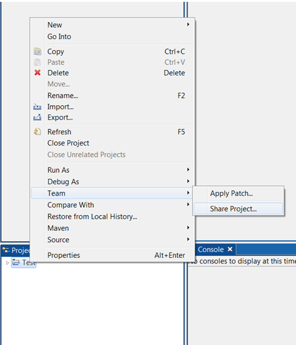
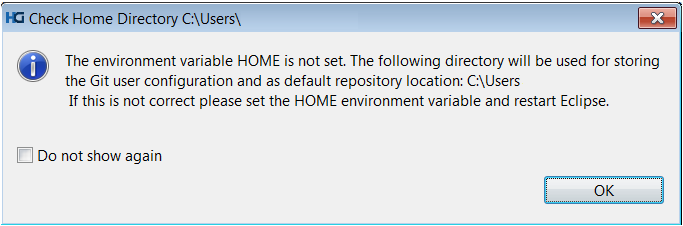
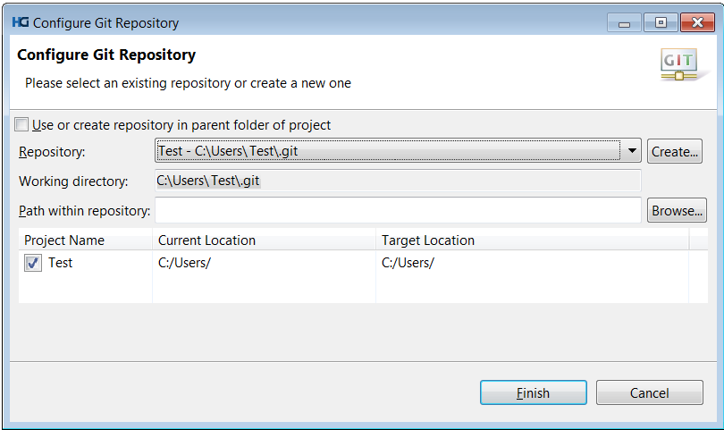

How to check in New ELT Project into Git Repository
1) Right click on the ELT project in Project Explorer > Team > Share Project

2) If it shows following overlaying window, check ‘Do not show again’ and click OK.

3) It will take to Configure Git Repository window. Select desired Git Repository from dropdown and click Finish.

4) Go to Project Explorer, Right click on the project > Team > Commit
5) Enter commit message and choose files to commit (check in ) and then click Commit:

6) Go to Project Explorer, right click on the project > Team > Push to upstream

It should show following confirmation screen: